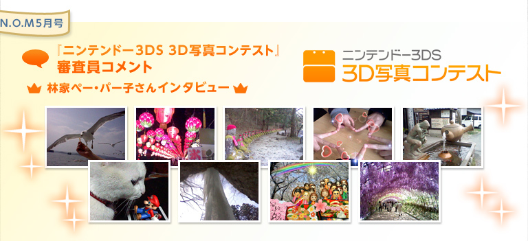

2012年1月から開催されていた『ニンテンドー3DS 3D写真コンテスト』が、全3回の日程を終了しました。そこで、審査員を担当された林家ペー・パー子さんに、審査を終えた感想をうかがいました。全国各地から集まったたくさんの3D写真の数々は必見ですので、ぜひ3DS本体のインターネットブラウザーでコンテストのサイトにアクセスして、実際の入賞作品を3Dでご覧ください。
−−
審査を終えてみて、いかがでしたか？
応募された写真がどれもレベルが高く素晴らしいので、芸人として舞台でネタをやる以上に、セレクトに本当に苦労しましたね。
−−
たくさんのご応募がありましたが、お気に入りの一枚は？
うーん、とても難しい質問ですね。いちばん気に入った写真は、第１回目の「植木ばち割りました」ですね。
走って逃げているワンちゃんの表情が本当に最高でした。
−−
林家ペー・パー子さんの審査の基準は？
審査の基準はあくまでも「直感！」で、すべて選んできました。
−−
ニンテンドー3DSの立体写真をご覧になった印象は？
立体写真をこういう形で見るのは実は初めてだったのですが、今回の審査を通じて素晴らしさをあらためて認識できました。自分で撮るとしたら、動物が好きなので、犬や猫を撮ってみたいですね。表情もそうですが、動いている姿を押さえたいなと思います。
−−
普段からさまざまな芸能人の方を撮影されていますよね。
被写体は基本的に100％人間ですね。どなたかを撮影しています。表情の一喜一憂など、自然体でいる様子が好きなので、そういう瞬間に遭遇するとついつい撮りたくなってしまいます。
−−
意識して写真を撮り始めたきっかけは？
元々からミーハーな性格なので、有名人との2ショットをきっかけに写真を撮り始めるようになりました。一番最初は郷ひろみさんですね。
−−
今までに撮影された総枚数はどれくらい？
30年間ほど撮り続けていますが、だいたい15万枚くらいは撮ってきているかと思います。もっとかも。
−−
すごい枚数ですね。今までに使ってきたカメラの台数は？
20台くらいですね。今現在使っているのは7台くらいです。
−−
写真を趣味にしてよかったなと思うときは？
今回の審査の話が来たことがよかったですね（笑）。応募してくださったみなさんの写真を見る機会もできたので。
−−
写真を撮る際に気をつけていることは？
余分なものが写り込まないように構図を決めたり、タイミングを計ったりすることですかね。一時の瞬間を大事にしています。間をおかずに連写して撮り逃さないようにすることです。
−−
審査をされてみて、立体写真を上手に撮るコツはどんな点だと思われましたか？
あえて「上手に」というところは意識せずに、主役と脇役のバランスをしっかりと把握して撮ることが大事だと思います。
−−
ニンテンドー3DSのユーザーのみなさんに、楽しく写真を撮るためのアドバイスを。
パーッと明るく笑って撮る、それがコツですね。「どうしたら立体的に見えるだろうか、表現できるだろうか」を意識して撮ることも大事だと思います。
−−
ありがとうございました。